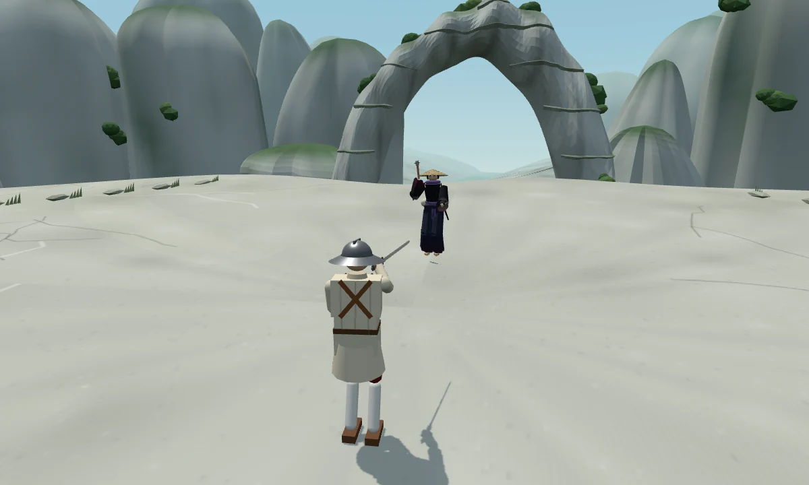
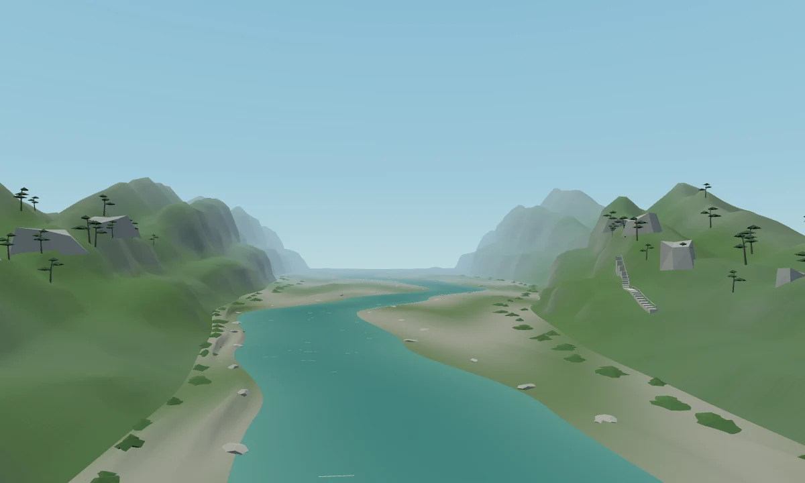
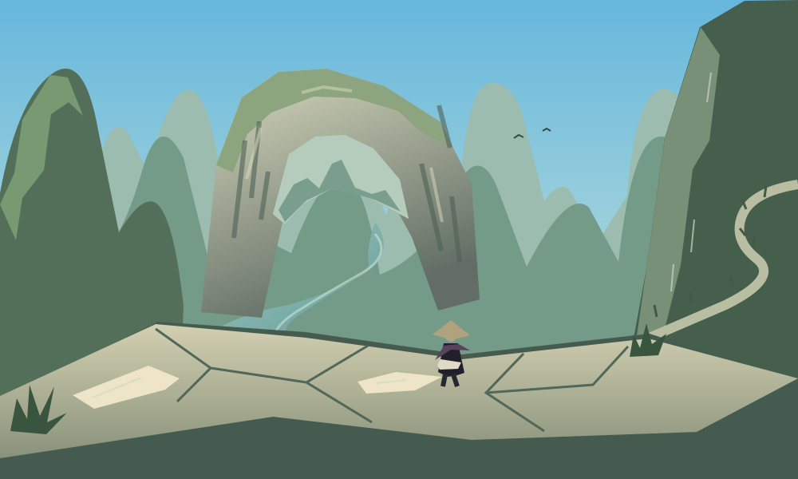

김씨의 새 무대 · 2026.10.10
한낮의 청람잔도
천연 돌다리가 걸린 협곡 위, 잠시 쉬어 가는 바윗길.
맑은 정오의 햇빛 아래, 먼 산과 옥빛 강이 펼쳐집니다.
사인검·아이스 중 하나를 고르면 시작합니다. 김씨는 모르겐슈테른을 사용합니다.

바위문 너머로 열린 풍경
밝은 석회암 쉼터 앞에 거대한 천연 돌다리, 그 아래 옥빛 물길, 더 멀리 옅어지는 봉우리가 겹칩니다. 주변으로 움직이면 암반에 가려졌던 강의 굽이가 드러납니다.
광시 일대의 석회암 지형에서 영감을 받은 가상의 중국 남부 협곡입니다. 특정 명소의 재현은 아닙니다. 청람잔도(靑嵐棧道)는 먼 산의 푸른 기운을 바라보는 벼랑길이라는 이미지로 붙인 이름입니다.
발밑과 등 뒤에도 이어지는 길
- 발밑: 볕에 바랜 암반, 가는 균열과 광물맥, 여행자들이 밟아 닳은 길.
- 양옆: 벼랑에 붙은 계단과 나무 난간. 멀리 들어온 길과 나가는 길이 이어집니다.
- 등 뒤: 작은 갈대 차양과 돌 의자, 암벽 틈에서 물이 떨어지는 샘.

적막 속의 작은 소리
가까운 샘의 낙수, 깊은 아래쪽의 낮은 물소리, 잎 사이의 바람. 협곡을 가로지르는 작은 새가 드물게 울며, 보이는 위치에서 소리가 납니다. 소리 사이에는 빈 시간을 남겼습니다.
환경음은 절차 합성입니다. 실제 휴대폰 스피커에서의 크기와 자연스러움은 플레이 피드백으로 더 다듬을 수 있습니다.
김씨가 지나가는 한 장면
김씨는 이곳에 정착한 주인이 아니라 산길을 지나는 여행자입니다. 밝은 바위 앞에 검은 옷, 보라색 천, 흰 봇짐과 짚색 삿갓이 놓입니다. 이 무대를 이유로 그의 국적이나 복식을 새로 규정하지 않습니다.
캐릭터의 몸과 무기, 중력과 전투 규칙은 그대로입니다. 넓은 암반이 결투 공간이며 새 절벽 추락 규칙은 추가하지 않았습니다.
처음 제안한 구도 보기

다음에 채울 자리
현재 인물·무대의 나이, 문화권, 무기, 자연환경을 정리했습니다. 정오의 협곡 다음으로 무엇이 부족한지 볼 수 있습니다.
인물·무대의 빈자리 분석 →